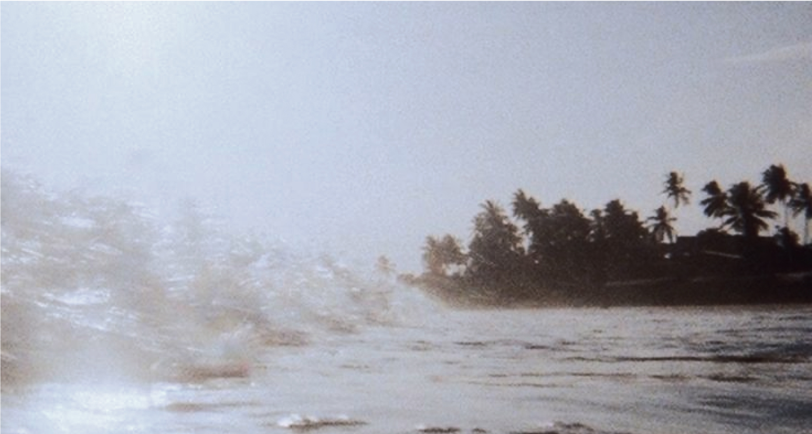

snok(s)
Наш проект родился из желания помочь людям соприкоснуться
с удивительным миром подсознания.
Каждый из нас хотя бы раз «Почему мне это снится?»,«Есть ли какой-то смысл
в моих сновидениях?».
Мы тоже размышляли над этим. Изучая психологию, культуру
и научные подходы, мы пришли
к выводу, что сновидения — это
не только случайные образы,
а сон — крайне важная часть нашей жизни.
Наша миссия — создать платформу, которая поможет каждому разобраться в своих сновидениях и глубже понять природу самого сна. Мы хотим, чтобы любой человек, вне зависимости от уровня знаний, мог разобраться в том, что происходит с его организмом, когда он засыпает.
Факты про сон
Во время сна наши знания переходят из кратковременной памяти в долговременную
Примерно четверть всей своей жизни мы проводим во сне
Примерно 12% людей видят сны только в черно-белом цвете.
Через 5 минут после пробуждения мы забываем до 50% снов, а через 10 минут — до 90%.
Примерно 55% людей хотя бы раз испытывали осознанное сновидение, в котором могли управлять событиями.
Хроническая нехватка сна ведёт к расстройствам слуха, зрения, повышенной тревожности, нарушению обмена веществ, нервным тикам и общей слабости
Во время сна наши знания переходят из кратковременной памяти в долговременную
СОН — ЭТО ВРЕМЯ, КОГДА МЫ ВОЗВРАЩАЕМСЯ К СЕБЕ
СОН - ЭТО КЛЮЧ ТАЙНАМ НАШЕГО РАЗУМА
СНЫ — ЭТО ВОРОТА В БЕССОЗНАТЕЛЬНОЕ Зигмунд Фрейд
Для наших материалов мы тщательно отбираем информацию из разных источников — научных исследований, статей и работ, — переводим их на понятный язык, чтобы предлагать только достоверную и полезную информацию в доступной форме.
Мы создали эту платформу, потому что уверены: погрузившись в мир сновидений, можно узнать о себе больше, чем кажется на первый взгляд, а здоровый сон может помочь жить намного счастливее.
СТАТЬИ
"Find out what your dream is trying to tell you"
"Find out what your dream is trying to tell you"
"Find out what your dream is trying to tell you"
"Find out what your dream is trying to tell you"
"Find out what your dream is trying to tell you"
1
2
3
4
5